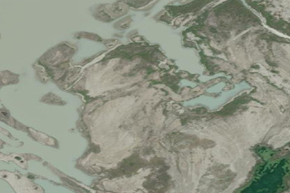

Bridge Glacier, BC

Aerial imagery source: Esri, Vantor, Earthstar Geographics, and the GIS User Community
| Elevation | 4,593 ft |
|---|---|
| CTAF | 122.9 |
| Coordinates | 50.852006, -123.480163 |
Notes
[shortfield] Location Overview Bridge Glacier sits in the Pacific Ranges of the southern Coast Mountains in southwestern British Columbia, on the eastern flank of the Lillooet Icefield, roughly a six-hour drive (much of it dirt road) north of Vancouver near Gold Bridge and the Bridge River valley. The Lillooet Icefield is one of the largest icefields in the Pacific Ranges, among the largest temperate-latitude glacial fields in the world. Bridge Glacier itself stretches about 17 kilometers, flowing eastward and terminating in a proglacial body known informally as Bridge Lake, which the glacier now calves into as it retreats. The surrounding landscape is one of dramatic lateral moraines, exposed forefield terrain, and alpine wilderness typical of BC's Coast Mountains. There appears to be several off-airport locations to land in this area - always inspect the landing site carefully before committing: 50.8497455971954, -123.45338853553449 50.86043329879875, -123.47055467231837 Camping & Recreation There are no developed campgrounds directly at the glacier; access is remote and typically arranged through backcountry lodges and air-charter operators rather than road access. Visitors commonly fly into the lake near the glacier with local operators such as Tyax Air/Adventures, based out of the Tyax Lodge near Gold Bridge, which serves as the main jumping-off point for excursions into the area. A hike-in route is possible for the more adventurous, overland from Salal Creek near the top of the Lillooet Valley, though it involves off-trail travel and is considerably more arduous than flying in. The area appeals to backcountry hikers, glacier photographers, and those interested in wilderness lake camping near the ice, but conditions are rugged and facilities are essentially nonexistent — this is true backcountry travel. Notes & Warnings Floatplane access to the lake at the glacier's terminus is the primary means of reaching the site, making local air charter services (such as Tyax Air) essential for most visitors. Pilots and visitors should be aware that the glacier is an active calving glacier — its terminus floats and periodically sheds large chunks of ice into the lake, which can create sudden waves and hazardous water conditions near the ice face. The lake itself has expanded substantially in recent decades as the glacier retreats, altering shorelines and approach routes from what older maps or imagery may show, so current local knowledge is important for safe landings and approaches. Weather in the Coast Mountains can change rapidly, and the remote, mountainous terrain means limited options for emergency landing or evacuation. History Bridge Glacier has a long record of advance and retreat stretching back through the Holocene. Tree-ring and radiocarbon studies of wood exposed by the retreating ice show the glacier experienced at least four major advances in the late Holocene, including a Tiedemann-aged advance around 3,000 years ago and further advances roughly 1,900 years ago and into the first millennium. Its most extensive Little Ice Age advance left prominent lateral moraines still visible today. Since then, the glacier's story has become one of accelerating retreat: historical aerial photographs show it retreating at about 6 meters per year before 1975, then averaging around 41 meters per year after 1979. Until the late 1980s, the lake at its terminus was small and shallow, but since 1991 the glacier's retreat has allowed the lake to roughly triple in size. Retreat rates accelerated further still, jumping from about 30 meters per year between 1981 and 2005 to over 200 meters per year between 2005 and 2010. Beyond its scientific significance as one of the best-studied lake-calving glaciers in North America, Bridge Glacier holds practical importance too: it is the source of the Bridge River and feeds the Bridge River Hydroelectric Project, which supplies roughly 6 to 8 percent of British Columbia's electricity, earning it the nickname of a giant "melting battery." The glacier lies within the unceded traditional territories of the Lil'wat and St'át'imc peoples.